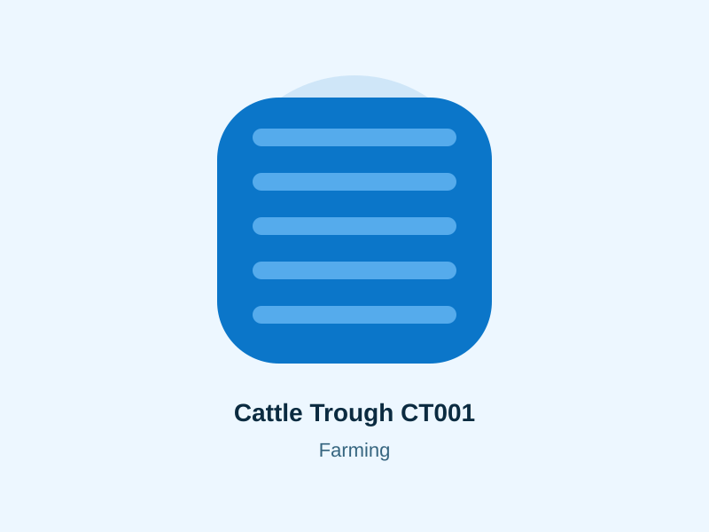
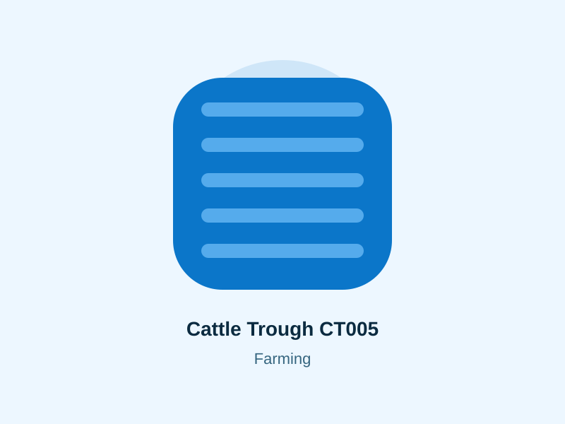
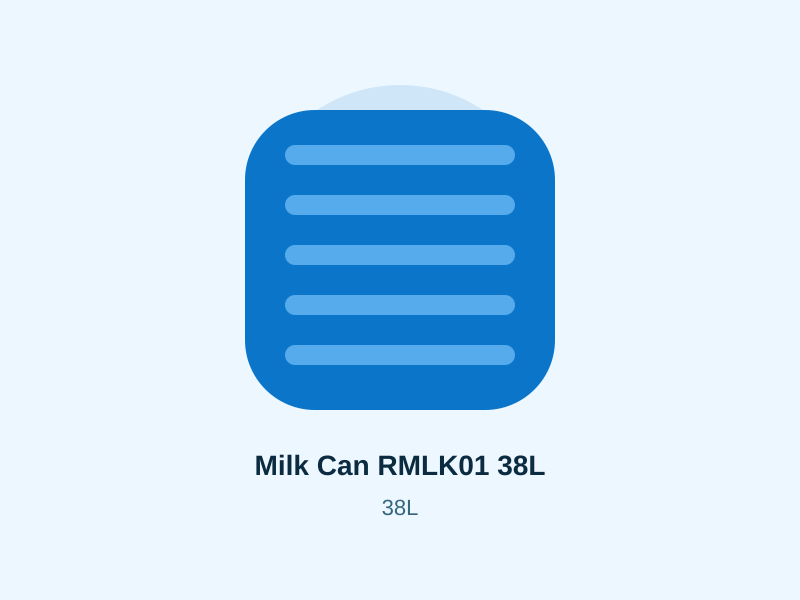
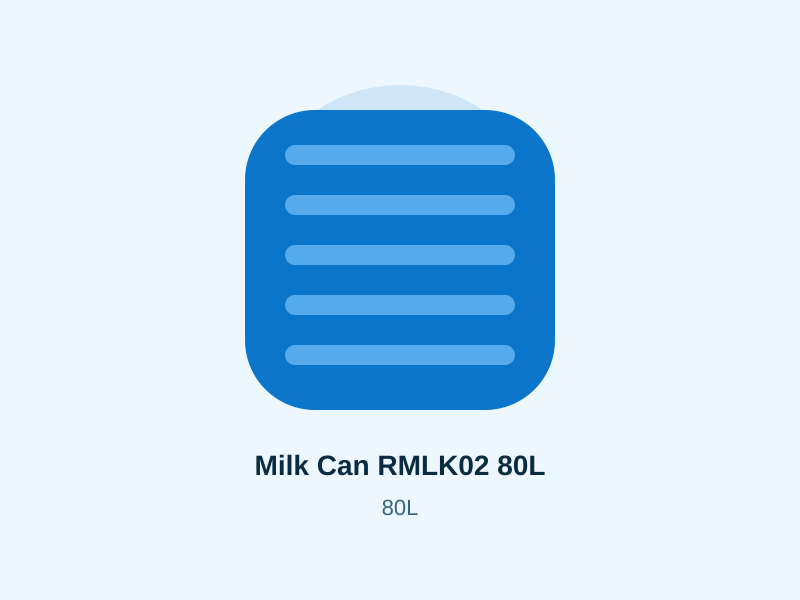

Kenya product category
Farming Plastic Products Kenya
Compare products, indicative prices and practical selection guidance before requesting a current quotation.



Prices and availability require confirmation.
Water and feed handling on farms
Farm plastic products need to survive routine handling, outdoor conditions and repeated cleaning. The catalogue includes cattle troughs and milk cans alongside large water storage products useful for livestock and farm backup supply.
Cattle trough selection
Choose trough size according to herd use, refilling method, placement and cleaning access. Position the trough on a stable surface and ensure the water source and refill rate suit peak livestock demand.
Milk can considerations
The listed 38L and 80L milk cans offer two handling capacities. Confirm the current manufacturer suitability and cleaning guidance for milk handling before purchase.
Farm water storage
Larger cylindrical tanks support borehole storage, harvested rainwater and backup supply. Size storage around daily livestock demand, irrigation or cleaning use and the reliability of the source.
Delivery to farms
Give the nearest town, county and site-access information when requesting delivery. Large tanks and farm products may need clear vehicle access and an agreed offloading point.
Plan around dry periods
Farm water demand can rise when rainfall drops and animals depend more heavily on stored or pumped water. Compare the source refill rate with peak dry-period demand. Storage should bridge interruptions, but it cannot compensate indefinitely for a source that produces less water than the farm consumes.
Protect farm pipework
Vehicle traffic, livestock and farm machinery can damage exposed pipes. Route distribution lines carefully and use isolation valves so a broken trough line does not empty the main storage tank.
Related help
Check delivery to your town · Browse all Roto tank sizes and prices · Read tank buying FAQs